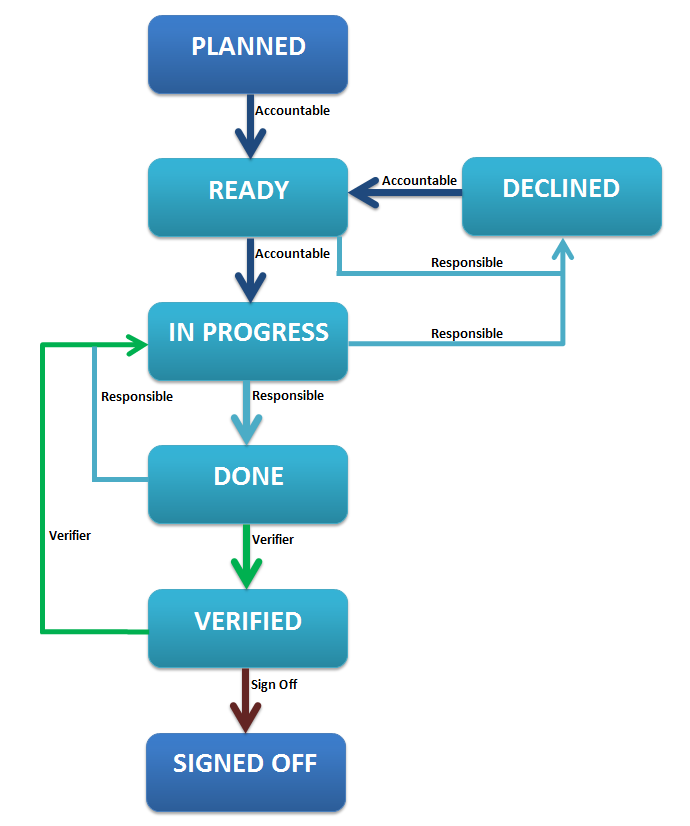
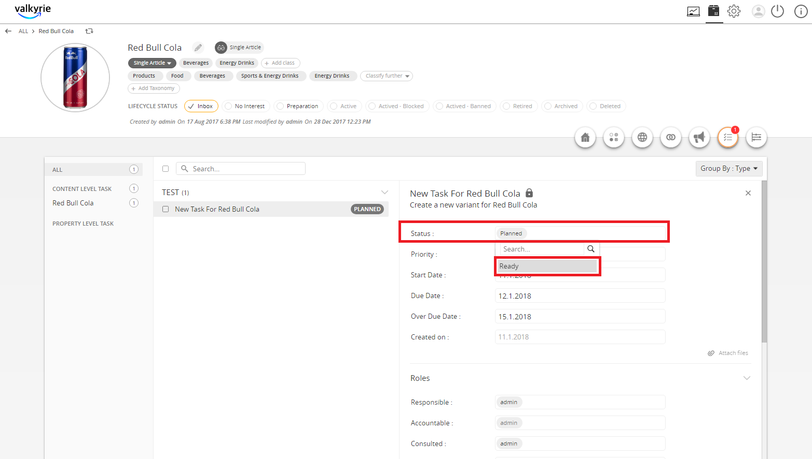
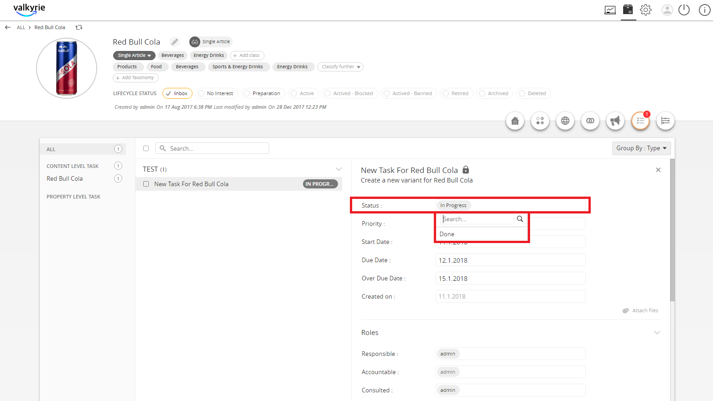
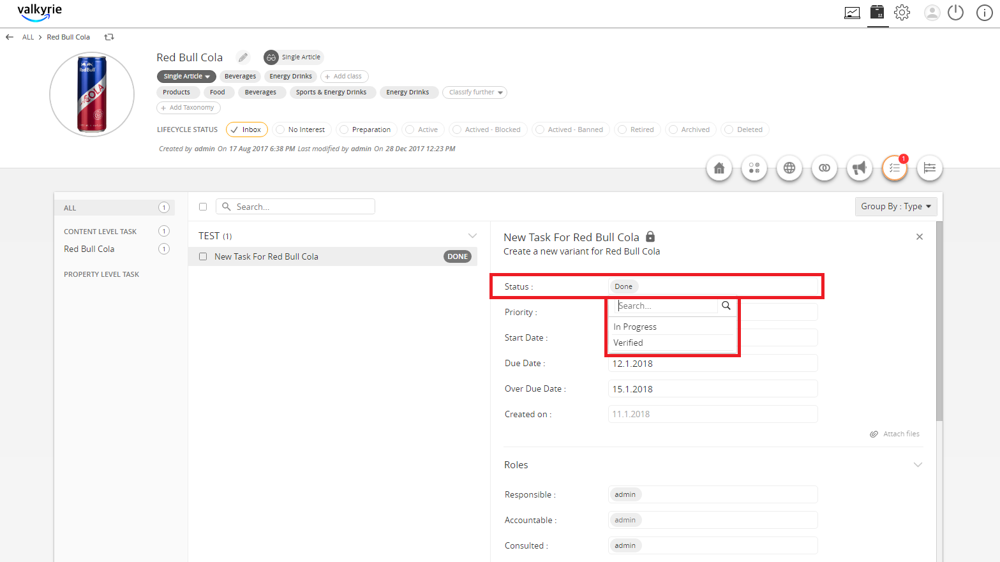
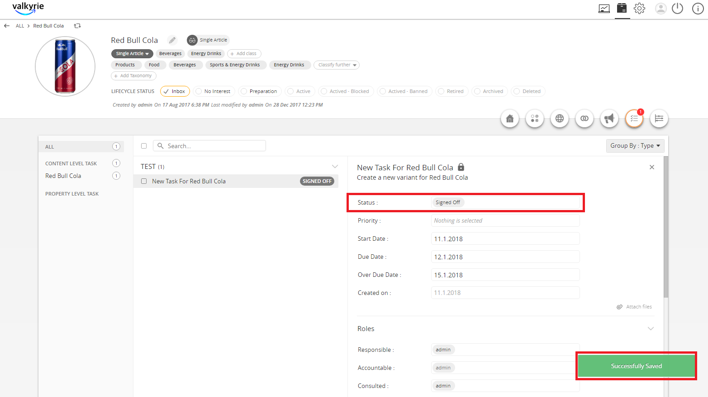

RACI-VS Tasks¶
The RACI-VS Tasks is a feature that allows users to create a task and assign roles that will check each stage of the task until it is completed and signed off.
| Key Term: |
|
| Description: |
|
| Related topics: | |
| Application: |
|
How to do: RACI-VS Tasks¶
To do this feature, follow these steps:
- Go to PIM and select a product.
- Click on the Tasks tab to create a new task.
- Select the Content Level task.
- Click on Add New Task button to create a new task.
- Enter the name of the new task then click on the Save button.
- Provide the description and important dates then click on the Save button.
Note: The task flow (including the roles involved) is shown below:

- The user who created the task, by default, is the Accountable user. The Accountable user can change the task from Planned to the Ready state.
- Once in the Ready state, the Responsible user acknowledges the task and sets it to either Declined or In Progress.

- When the task is completed by the Accountable user, the Responsible user acknowledges and sets the status to Done.

- Once the status is Done, the Verifier checks the completion of the task and can set the status back to In Progress. If there are no changes, the Verifier endorses it to Verified status.
- If the Verifier sets it back to In Progress, the Accountable user will have to ensure the completion of the task again so that the Responsible user can set it to Done and then, the Verifier will validate. If the status is set to Verified, move to the next step.
- Once Verified, the Sign-off user can set it back to In Progress wherein the cycle will restart. If everything is good, the Sign-off user can set it to Signed off.

- If Signed off, the final status will look like the image shown below: